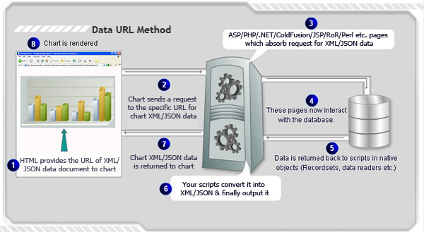

| Data URL Method |
|
In this method, you provide the URL of chart data-source (XML/JSON) to FusionCharts XT. The chart sends a request for data to the specified URL, reads it, parses it and then renders the charts accordingly. This method can be used to render a new chart or update an existing chart. The image below (followed by the listed steps) illustrate the process involved in a generic Data URL Method:  |
Effectively, in this process you need the following to build a chart:
|
| Sample Usage of Data URL method using FusionCharts JavaScript Class |
<div id="chart1div">
This text is replaced by the chart.
</div>
<script type="text/javascript">
var chart1 = new FusionCharts("Column2D.swf", "ChId1", "600", "400", "0", "1");
chart1.setXMLUrl("Data.asp");
chart1.render("chart1div");
</script>
FusionCharts JavaScript class provides other functions to achieve the same: setJSONUrl, setChartDataUrl, setChartData, and setDataURL (deprecated) |
| Using various server side scripts |
To ease embedding of charts in your web pages, FusionCharts XT provides wrapper classes ready for various server-side scripts like ASP, ASP.NET C#, ASP.NET VB.NET, PHP, J2EE, Ruby on Rails and ColdFusion. Moreover, in ASP and PHP, the APIs allow you to connect to arrays and databases and even dynamically build XML data which can directly be provided to chart. Here, we provide highlights of code snippets that are used in each technology to embed FusionCharts XT using Data URL method. Using ASP Call renderChart("../../FusionCharts/Column3D.swf", "Data/Data.asp", "", "myFirst", 600, 300, false, false)
Read more. Using ASP.NET C# FusionCharts.RenderChart("../FusionCharts/Column3D.swf", "Data/Data.aspx", "", "myFirst", "600", "300", false, false);
Read more. Using ASP.NET VB FusionCharts.RenderChart("../FusionCharts/Column3D.swf", "Data/Data.aspx", "", "myFirst", "600", "300", False, False)
Read more. Using PHP renderChart("../../FusionCharts/Column3D.swf", "Data/Data.php", "", "myFirst", 600, 300, false, false);
Read more. Using J2EE <jsp:include page="../Includes/FusionChartsRenderer.jsp" flush="true"> <jsp:param name="chartSWF" value="../../FusionCharts/Column3D.swf" /> <jsp:param name="strURL" value="Data/Data.jsp" /> <jsp:param name="strXML" value="" /> <jsp:param name="chartId" value="myFirst" /> <jsp:param name="chartWidth" value="600" /> <jsp:param name="chartHeight" value="300" /> <jsp:param name="debugMode" value="false" /> <jsp:param name="registerWithJS" value="false" /> </jsp:include> Read more. Using ColdFusion <cfoutput>#renderChart("../../FusionCharts/Column3D.swf", "Data/Data.cfm", "", "myFirst", 600, 300, false, false)#</cfoutput>
Read more. Using Ruby on Rails render_chart '/FusionCharts/Column3D.swf', 'Data.builder, '', 'configuredChart', 600, 300, false, false Read more. |